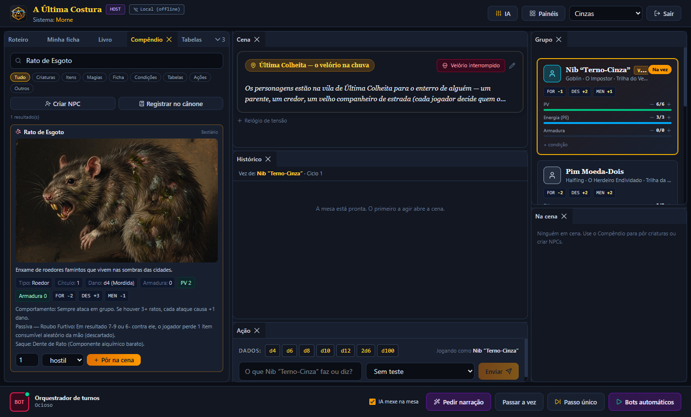
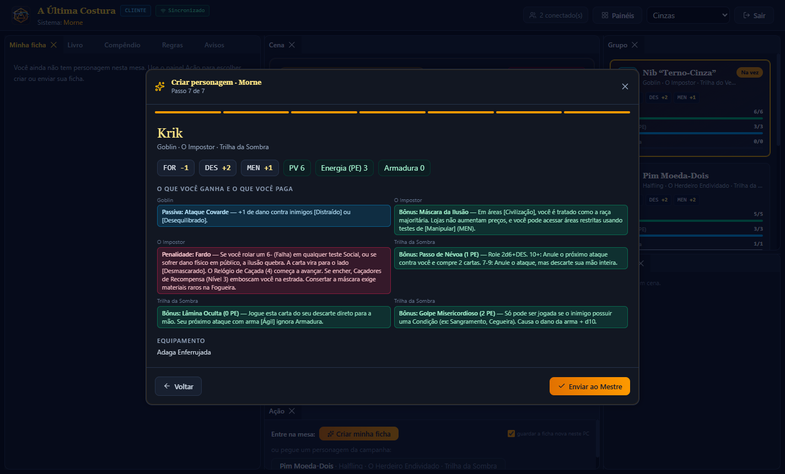
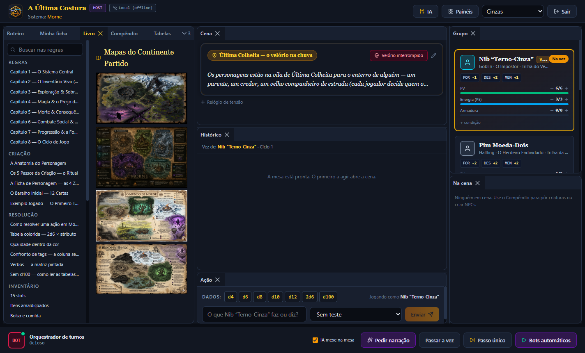
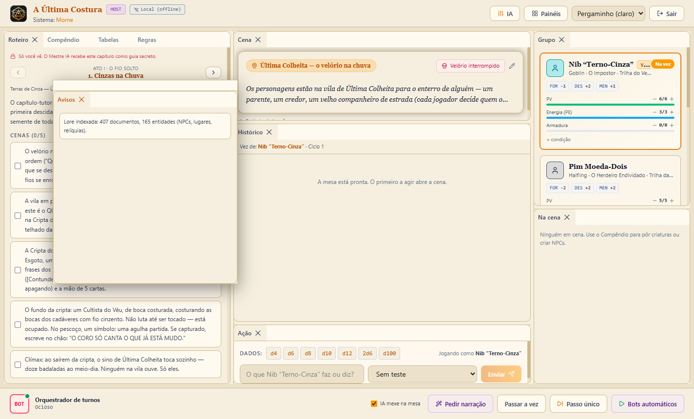

A mesa de RPG no seu PC — para qualquer sistema, com Mestre e jogadores de IA sentados à mesa junto com os humanos.
Your RPG table on the desktop — for any system, with an AI Game Master and AI players sitting next to the humans.
Um PC hospeda a mesa e roda as IAs; os amigos entram com um código e jogam com a própria ficha, em tempo real.
One PC hosts the table and runs the AIs; friends join with a code and play their own character, in real time.
Windows 10/11 · 64 bits · atualiza sozinho. O instalador ainda não é assinado: no aviso do SmartScreen, clique em Mais informações → Executar assim mesmo.
Windows 10/11 · 64-bit · updates itself. The installer is not code-signed yet: on the SmartScreen warning, click More info → Run anyway.

Monte o seu sistema, prepare a campanha, chame as IAs que você já tem e jogue.
Build your system, prepare the campaign, bring the AIs you already have — and play.
Atributos, recursos, fórmula de dados, resultados, ações, tabelas encadeadas, condições, bestiário, itens e magias — tudo como dados, sem programar.
Attributes, resources, dice formula, outcomes, actions, chained tables, conditions, bestiary, items and spells — all as data, no coding.
Detecta o que já está no seu PC: CLIs (Gemini, Grok, Qwen, Codex, Claude Code…), servidores locais (Ollama, LM Studio…) e chaves de API. Uma IA por personagem, se quiser.
Detects what is already on your PC: CLIs (Gemini, Grok, Qwen, Codex, Claude Code…), local servers (Ollama, LM Studio…) and API keys. One AI per character if you like.
Um app só. Quem hospeda roda o Mestre, as IAs e a memória da campanha; quem entra recebe tudo ao vivo pelo seu servidor de sincronização.
One app. The host runs the GM, the AIs and the campaign memory; players receive everything live through your sync relay.
O jogador cria a ficha num assistente que mostra bônus, penalidades e passivas de cada escolha, e consulta o Livro do jogador — o Mestre guarda os segredos dele.
Players build their sheet in a wizard that shows each choice's bonuses, penalties and passives, and read the Player's Book — the GM keeps their own secrets.
O RPG inteiro num arquivo: regras, livro, bestiário, campanha, fichas, lore e imagens. Mande para um amigo e ele recebe tudo montado.
The whole RPG in one file: rules, book, bestiary, campaign, sheets, lore and images. Send it to a friend and it arrives fully assembled.
Arraste, solte, empilhe em abas ou solte em janelas flutuantes. Vários temas, do escuro ao pergaminho.
Drag, drop, stack into tabs or float panels. Several themes, from dark to parchment.
O assistente segue os passos do sistema. Em verde o que você ganha, em vermelho o que você paga, em azul as passivas. Pronta, ela vai para o Mestre aprovar.
The wizard follows the system's steps. Green is what you gain, red is what you pay, blue are passives. When done, it goes to the GM for approval.

Regras, criação, mapas e tabelas para consulta durante o jogo — com busca. Seções do Mestre nunca chegam aos jogadores.
Rules, character creation, maps and tables to look up during play — with search. GM sections never reach the players.

Cada painel é uma peça: roteiro, ficha, compêndio, histórico, grupo, cena. Monte o layout que funciona para você — ele fica salvo.
Every panel is a piece: GM guide, sheet, compendium, log, party, scene. Arrange the layout that works for you — it is saved.

Só um PC precisa rodar as IAs. O servidor de sincronização é pequeno, fica no seu VPS e apenas repassa mensagens — nenhuma IA roda nele.
Only one PC runs the AIs. The sync relay is tiny, lives on your VPS and only forwards messages — no AI runs there.
Do download à primeira sessão.
From download to your first session.
.nexus que você recebeu — ou dê dois cliques no arquivo..nexus file you received — or double-click the file.2d6 + attr + mod) e os resultados por condição (ex.: total >= 10).2d6 + attr + mod) and outcomes by condition (e.g. total >= 10).nexus-relay-<versão>.mjs do último release.RELAY_ADMIN_TOKEN=<um segredo longo> PORT=8787 node nexus-relay.mjs (de preferência como serviço systemd, atrás de HTTPS).nexus-relay-<version>.mjs from the latest release.RELAY_ADMIN_TOKEN=<a long secret> PORT=8787 node nexus-relay.mjs (ideally as a systemd service, behind HTTPS).